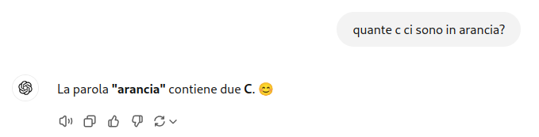
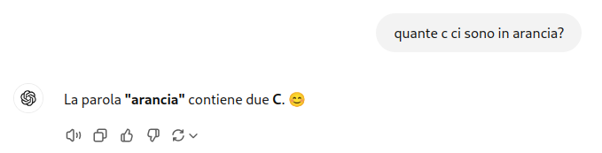
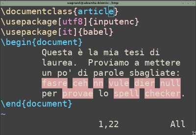

Linee guida per la stesura della Tesi di Laurea
Queste linee guida servono per la richiesta e la consegna della tesi. Si prega di far riferimento al vademecum ufficiale [1] (e di leggerlo prima di richiedere informazioni!) dell'università. Queste linee guida riguardano lo svolgimento della tesi con me come relatore, principalmente nel campo della sicurezza informatica.I punti riguardano sia Tesi triennali che Tesi magistrali.
Richiesta della tesi
Per richiedere la tesi è necessario inviare una mail al mio indirizzo istituzionale contenenti queste informazioni principali:- Oggetto: Richiesta Tesi "Nome Cognome"
- Nome e cognome
- Sessione di laurea
- Tipologia di tesi: Le tesi si dividono in due categorie: "Compilative" e "Sperimentali". Le prime prevedono la scrittura di una relazione su un tema (e.g. "la crittografia post-quantistica") non generando nessun dato personalmente (ma, ovviamente scrivendo tutto il corpo della tesi senza copiare, fare riferimento al capitolo "Plagio e proof reading"). Le seconde invece prevedono la creazione di programmi, documenti ausiliari o prove di laboratorio di proprio sviluppo (e.g. "analisi di attacchi su diversi sistemi operativi embedded". Le seconde ovviamente possono ambire (in media, non è una regola) a punteggi più alti.
- Tema di riferimento: La materia della sicurezza informatica è molto vasta, non è possibile svolgere una tesi nel campo della sicurezza senza verticalizzarlo un attimo. Potete prendere come riferimento i temi del corso, altrimenti proporne uno voi, basato su esperienze o interessi personali.
Scrittura
- La tesi può essere scritta in Word o LaTeX (a parte casi particolari da indicare nella prima mail), quest'ultimo linguaggio è molto più elastico di Word nella tipografia. Potete usare editor online come overleaf[2]
- La tesi prevede una bibliografia, normalmente è necessario raccogliere questa prima della scrittura, in modo da inserire (tramite \cite e bibTeX) delle citazioni nel corpo della tesi. Una tesi triennale ha bisogno di circa 10 riferimenti bibliografici, una magistrale circa 15 / 20. Questi riferimenti possono essere trovati su siti come Google Scholar
- È necessario inserire estratti di
codice, tabelle o immagini nella
tesi quando questi aiutano la
comprensione dell'argomento. Se
pensate di stare scrivendo una
parte molto tecnica e poco
comprensibile al lettore,
aiutatevi con le immagini o con
il codice.
Al contrario, inserire solo spezzoni di codice con poca spiegazione è fortemente sconsigliato (anche se questo contiene tanti commenti).
Se il codice o le immagini non sono vostre (o se le avete modificate in minima parte), citate la fonte.
Ogni immagine va spiegata nel corpo della tesi riferendosi direttamente e deve avere una breve didascalia, lo stesso vale per i frammenti di codice.
Le immagini inserite devono essere leggibili in ogni parte e non occupare troppo spazio, inserire un'immagine con scritte illeggibili è equivalente a inserire un'immagine enorme. -
La struttura della tesi (sperimentale)
dovrebbe ricalcare questa scaletta:
- Introduzione. da scrivere alla fine, un breve riassunto su cosa si andrà ad affrontare nella tesi.
- Scenari applicativi e stato dell'arte. Cosa stiamo affrontando, p.e. una tesi che propone un attacco a HTTPS dovrebbe spiegare bene come funziona la parte di HTTPS attaccata e quali sono le limitazioni.
- Analisi progettuale.. Cosa vogliamo raggiungere, perché e quali sono state le vostre scelte per lo sviluppo "su carta".
- Implementazione. Come abbiamo implementato il programma, se ci sono state scelte particolari o punti particolarmente ostici che sono stati superati. Se ci sono state difficoltà insormontabili vanno spiegate.
- Risultati.
Descrivete e inserite
qui gli esperimenti
effettuati e i dati
raccolti.
Se avete grafici e dati, presentateli in questa sezione (nella forma in cui pensate sia più facile visualizzare quello che volete far trasparire dai dati).
Scrivete sempre su che supporti hardware o software avete effettuato le prove e quante ne avete fatte (se rilevante). - Conclusione e sviluppi futuri. da scrivere alla fine, un breve riassunto di cosa si è affrontato, i risultati (se quanto indicato nell'introduzione come obiettivo è stato raggiunto) e come è possibile continuare la tesi (p.e. se qualcosa non è stato affrontato per motivi di tempo o limitazioni hardware).
Plagio e Proof reading
Prima di inviare una revisione della tesi di laurea, assicuratevi di aver seguito questi punti:- Plagio La tesi viene ovviamente controllata accuratamente per quanto riguarda il plagio. È vietato copiare, non prendere ispirazione. Questo vuole dire che potete inserire nel vostro documento informazioni ottenute da altre fonti, ma queste non possono essere riportate nella loro forma originale. In altre parole, dovete modificare le fonti (NON IN FORMA AUTOMATICA) in modo da aggiungere un vostro parere personale.
- ChatGPT e sistemi di generazione del testo
L'uso di ChatGPT o sistemi di generazione del testo (o
immagini) non è esplicitamente vietato ma FORTEMENTE sconsigliato.
Ci sono due principali problemi con l'uso di questi
strumenti:
- Allucinazioni i sistemi di AI INVENTANO, questo implica
che i dati riportati dai sistemi possono essere estremamente vaghi e non
corretti anche se possono sembrare molto convincenti. Facciamo un rapido controllo.


Per i più curiosi, in fondo a questa pagina potete trovare un'interessante allucinazione sul codice.
Ovviamente potrebbe succedere che ChatGPT vi dia un risultato corretto, ma non nel 100% dei casi, provando diverse volte potete riscontrare questo genere di risultati.
In linea di massima vi fidereste mai se qualcuno avesse scritto con questo sistema il software dell'aereo del vostro prossimo volo? Potete capire velocemente come questo approccio non sia minimamente accettabile.
- Stile di Scrittura gli LLM tendono a scrivere in modo robotico, utilizzando molti elenchi puntati, inserendo parole auliche o frasi enormi "allungando il brodo", questo risulta essere particolarmente riconoscibile ad un occhio esperto.
- Allucinazioni i sistemi di AI INVENTANO, questo implica
che i dati riportati dai sistemi possono essere estremamente vaghi e non
corretti anche se possono sembrare molto convincenti. Facciamo un rapido controllo.

- Spell checking.
Passate uno spell checker su
tutto il corpo della tesi, ne
esistono vari, una buona scelta
può essere aspell su Linux.
Si può attivare su vim
nel seguente modo:
:set spl=it :set spell
A questo punto è sufficiente seguire le istruzioni.
Il risultato è simile al seguente:  - Controllate apostrofi, accenti
ed errori comuni:
s/un altra/un'altra/ s/obbiettivo/obiettivo/ s/sopratutto/soprattutto/ s/perchè/perché/ s/ é / è / s/ E' / È / s/interfaccie/interfacce/ - Struttura frasi. Non fate frasi troppo lunghe, una frase in genere non deve occupare più di tre righe. Se avete un dubbio su una di queste, provate a ripeterla ad alta voce (solo espirando mentre parlate), se finite il fiato è troppo lunga. ;)
- d eufoniche. L'uso smodato
della "d eufonica" (ad, od, ed)
è indicatore di poca cura nella
scrittura della tesi. La regola
è:
- Se una parola, preceduta da una singola vocale {a,o,e}, inizia con la stessa vocale, ci vuole la d. "ad alta", "ed entrare", "od obbedire"
- Se la vocale è diversa non richede la d: "a entrare", "e obbedire", "o alte"
- Se la parola inizia con la forma eufonica, la vocale precedente non richiede la d: "o odore".
- "ad esempio" è l'unica eccezione.
- Virgolette di LaTeX. Abbiamo
riscontrato che molte volte
vengono utilizzate le
virgolette di LaTeX nel modo
sbagliato.
Scrivendo "parola", questa viene renderizzata come ”parola” (con le virgolette solo chiuse), per ottenere le virgolette "giuste" utilizzate ``parola''. - Evitate il link rot[3]. Se citate un URL, inserite la data in cui l'avete visitato e, se possibile, fate uno snapshot con sistemi come archive.org. Non è necessario inserire la data precisa in cui l'avete visitato, basta che le informazioni alla data inserita siano coerenti con quello che citate.
- I termini inglesi in un documento Italiano vanno al singolare: Non si scrive "le system calls" ma "le system call", allo stesso modo "gli switch", "i router", etc.
Invio Tesi
Non è necessario inviare la tesi capitolo per capitolo. Quando vi sentite pronti, potete inviare alcune parti per capire se state procedendo nella direzione giusta.Richiedo comunque alcuni update durante la stesura della tesi, p.e. durante lo sviluppo di un eventuale applicativo, fatevi sentire. :)
Evitate di inviare la tesi per sistemi alternativi alle semplici e-mail (Meet, Teams o Telegram).
N.B.: Normalmente ho molti tesisti per sessione. Consegnate la tesi per tempo!
[1] Disponibile qui sotto la voce "Regolamento della Prova finale e della Tesi di Laurea" [2] https://overleaf.com
[3] https://en.wikipedia.org/wiki/Link_rot
Allucinazione di ChatGPT su codice Python
Dopo aver chiesto "Crea un programma python per ottenere gli indirizzi ipv6 presenti all'interno di una stringa" ChatGPT ha risposto nel seguente modo:Risposta di ChatGPT
Per estrarre gli indirizzi IPv6 presenti all'interno di una stringa, possiamo utilizzare una espressione regolare in Python. Un indirizzo IPv6 ha una struttura abbastanza definita e può essere riconosciuto con un pattern regolare.Ecco un programma Python che trova tutti gli indirizzi IPv6 all'interno di una stringa:
Codice Python
import re
def extract_ipv6_addresses(text):
"""
Estrae gli indirizzi IPv6 da una stringa.
:param text: La stringa da cui estrarre gli indirizzi IPv6.
:return: Una lista di indirizzi IPv6 trovati.
"""
# Pattern per l'indirizzo IPv6
ipv6_pattern = r'\b([0-9a-fA-F]{1,4}:){7}[0-9a-fA-F]{1,4}\b'
# Trova tutte le corrispondenze di indirizzi IPv6 nella stringa
ipv6_addresses = re.findall(ipv6_pattern, text)
return ipv6_addresses
# Esempio di utilizzo
if __name__ == "__main__":
test_string = "I have two IPv6 addresses:
2001:0db8:85a3:0000:0000:8a2e:0370:7334
and 2001:db8::ff00:42:8329."
ipv6_addresses = extract_ipv6_addresses(test_string)
print("Indirizzi IPv6 trovati:")
for address in ipv6_addresses:
print(address)Spiegazione del codice
- Pattern Regolare:
- L'espressione regolare utilizzata
(
r'\b([0-9a-fA-F]{1,4}:){7}[0-9a-fA-F]{1,4}\b') cattura gli indirizzi IPv6. - L'indirizzo IPv6 è formato da 8 gruppi di 1-4 caratteri
esadecimali separati da due punti (
:). Ogni gruppo può essere da 1 a 4 caratteri, come in2001:0db8:85a3:0000:0000:8a2e:0370:7334. - La parte
\bindica un "confine di parola", in modo che il pattern riconosca l'indirizzo solo come entità separata (non parte di una parola più lunga).
- L'espressione regolare utilizzata
(
- Funzione
re.findall:
re.findalltrova tutte le occorrenze del pattern nella stringa di testo e le restituisce come lista.
- Esempio:
- La stringa di esempio contiene due indirizzi IPv6:
2001:0db8:85a3:0000:0000:8a2e:0370:7334e2001:db8::ff00:42:8329.
- La stringa di esempio contiene due indirizzi IPv6:
Esempio di Output
Se esegui il programma con il testo di esempio:Input:
I have two IPv6 addresses: 2001:0db8:85a3:0000:0000:8a2e:0370:7334
and 2001:db8::ff00:42:8329.Output:
Indirizzi IPv6 trovati:
2001:0db8:85a3:0000:0000:8a2e:0370:7334
2001:db8::ff00:42:8329Considerazioni
- L'espressione regolare utilizzata non gestisce varianti come
indirizzi IPv6 abbreviati (es.
2001:db8::ff00:42:8329), ma puoi adattarla per supportare questi casi, se necessario. - Se vuoi migliorare il programma per includere anche indirizzi con abbreviazioni o con "::", puoi modificare l'espressione regolare per adattarla a questi formati.
Se hai altre domande o vuoi modificare il programma per casi specifici, fammi sapere! 😊
Nonostante sia veramente credibile e sfido chiunque, dato uno sguardo veloce, di accorgersi dell'errore. Si può facilmente notare che (a parte la schematicità del discorso, pieno di elenchi puntati), il programma non è corretto. Basta lanciarlo:
guest@generic:~$ python3 /tmp/test.py
Indirizzi IPv6 trovati:
0370:Non sono un grande esperto di ChatGPT e non l'ho "fregato" con richieste patricolari o indotto in tentazione, ho solo creato un paio di programmi prima di incorrere in un suo strafalcione...